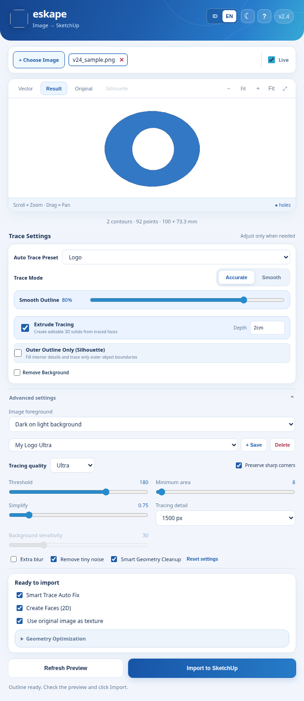

AVAILABLE FREE
PNG to precise outlines
Upload PNG, atur tracing, lihat live preview, dan impor kurva/editable edges langsung ke SketchUp.
PNG→OUTLINE
Trace outlines, build editable shapes, and bring your ideas into SketchUp. A simpler creative workflow, right where you design.
Your image, traced into editable SketchUp curves.

Unlock material mapping and Extrude Tracing.
Mulai dari outline sederhana sampai objek SketchUp bertekstur dengan langkah yang mudah.
Upload PNG, atur tracing, lihat live preview, dan impor kurva/editable edges langsung ke SketchUp.
Tempel gambar sumber ke faces dengan pemetaan material otomatis.
Jadikan hasil tracing menjadi geometri 3D yang dapat diedit.
Ekstrak outline luar untuk desain signage, logo, dekorasi, dan event production.
Gunakan ESKAPE secara gratis dengan fitur terbatas, atau pilih paket Full sesuai kebutuhan. Aktivasi dilakukan langsung melalui WhatsApp publisher.
Selamanya gratis
Untuk mencoba tracing dasar langsung di SketchUp.
per 1 bulan
Akses fitur Full untuk kebutuhan jangka pendek.
per 1 tahun
Akses fitur Full untuk penggunaan sepanjang tahun.
sekali bayar
Opsi lisensi Lifetime tanpa pembayaran bulanan.
Aktivasi Full melalui WhatsApp: +62 858-1114-3043. Unduh plugin yang sama; fitur Full terbuka setelah aktivasi. Tanyakan ketentuan lisensi dan pembaruan versi kepada publisher.
Window → Extension Manager → Install Extension, lalu restart SketchUp.
Buka eskape, upload PNG, sesuaikan outline di live preview, lalu impor.
Buka About di plugin, salin Installation ID, kirim permintaan lewat WhatsApp, lalu masukkan key yang disetujui.
Ya. Versi Free mendukung input PNG, tracing dan impor outline berupa garis SketchUp. Create Faces, Original Image Texture, Geometry Optimization, silhouette khusus, dan extrude memerlukan Full.
1 Bulan Rp16.000, 1 Tahun Rp79.000, atau Lifetime Rp199.000. Klik tombol pada paket pilihan untuk menghubungi publisher via WhatsApp.
Tracing berjalan di SketchUp. Untuk mengajukan aktivasi Full, pengguna perlu menghubungi publisher melalui WhatsApp. Verifikasi key berlangsung secara lokal.
Tidak. Key tahap awal terikat ke satu Installation ID. Jika pindah perangkat, hubungi publisher untuk meminta key baru. Ini bukan kontrol anti-pembajakan yang sempurna.
Belum. Paket ini masih versi Beta dan perlu pengujian pada SketchUp desktop sebelum produksi komersial.